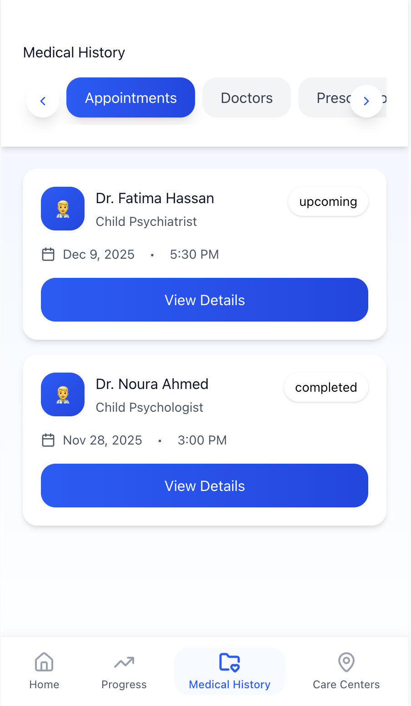
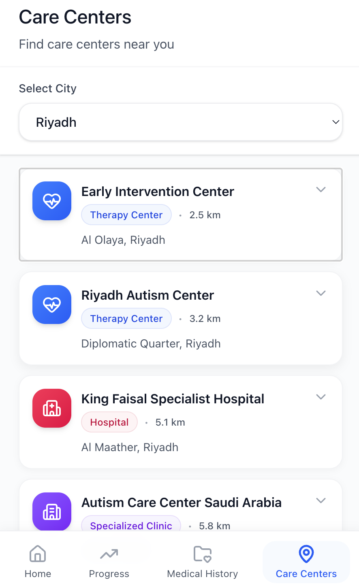

من ملاحظات البيت إلى نقاش مع الأخصائي
صُمّم الفحص المقترح في مدكا DX لدعم المختصين في تقييم مؤشرات التوحّد لدى الأطفال من عمر ١٨ إلى ٧٢ شهرًا عند وجود مخاوف بشأن النمو.
افتح النموذج الأولي لمدكا DXدور الأسرة والأخصائي
أنشئ ملفًا للطفل
ينشئ ولي الأمر أو مقدّم الرعاية ملفًا للطفل، ثم يجيب عن أسئلة موجّهة حول نموه وروتينه اليومي.
أضف أمثلة من البيت
في التطبيق المقترح، يمكن لمقدّم الرعاية مشاركة أمثلة قصيرة من لعب الطفل أو سلوكه لتوضيح إجاباته.
راجع المعلومات مع الأخصائي
يعبّئ الأخصائي استبيانًا طبيًا مستقلًا، ويراجع ملاحظات مقدّم الرعاية مع تاريخ الطفل. ويشمل التصوّر المقترح إمكانية إجراء هذه المناقشة عن بُعد.
جولة في النموذج الأولي لمدكا DX
اطّلع على شاشات إعداد الملف والمتابعة المقترحة. اضغط على أي صورة لتكبيرها. الدرجات والمواعيد وقوائم مراكز الرعاية أمثلة توضيحية.

يوضّح النموذج الأولي الهدف من ملف الطفل، ويطلب من ولي الأمر أو الوصي تأكيد أحقيته في إعطاء الموافقة.
يعرض النموذج الأولي سجلات الفحص السابقة ومخططًا لدرجات توضيحية.


تجمع شاشة السجل الطبي المواعيد وملفات الأخصائيين وسجلات الوصفات.


يرتّب الدليل المقترح مراكز الرعاية حسب المدينة، ويعرض أمثلة لبيانات التواصل والخدمات.
ما الذي توضّحه نتيجة الفحص؟
يساعد الفحص على تحديد الحالات التي قد تحتاج إلى تقييم نمائي أشمل. ويتطلّب التشخيص مختصًا صحيًا مؤهلًا يراجع النتيجة في ضوء تاريخ الطفل ويُجري تقييمًا إضافيًا عند الحاجة.
يبحث فريق مدكا DX في استخدام تعلّم الآلة مع استبيانات مقدّمي الرعاية والملاحظات المستخلصة من الفيديو. ويفسّر الأخصائي المعلومات ويناقش الخطوات التالية مع الأسرة.
اقرأ دليل فحص التوحّد من مراكز مكافحة الأمراض الأمريكية